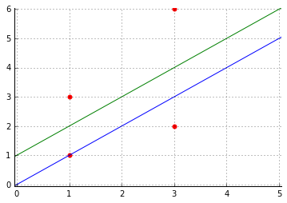
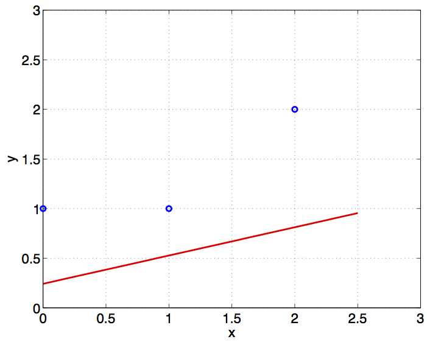
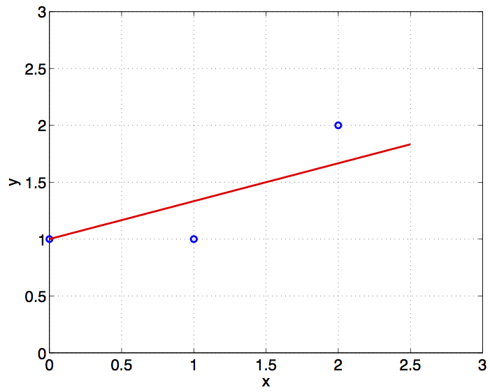
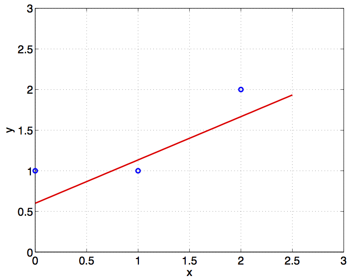
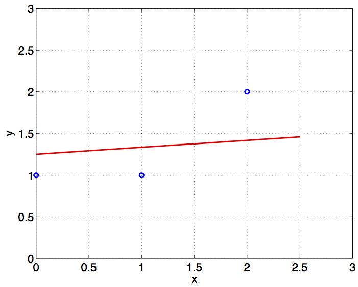

Regression
Problem 1 Linear regression
Consider the data set and regression lines in the plot below.

- The equation of the blue (lower) line is: \(y = x\)
- The equation of the green (upper) line is: \(y = x + 1\)
- The data points (in x, y pairs) are: \([[[1], 3], [[1], 1], [[3], 2], [[3], 6]]\)
a) What is the squared error of each of the points with respect to the blue line? Provide a Python list of four numbers (in the order of the points given above).
Answer: [4, 0, 1, 9].
Explanation: Given the data points and regression line
\(y=x\), we calculate the squared error of each point:
At \(x=1\), the regression predicts \(\hat{y} = 1\), so the first two errors
are \((3-1)^2 = 4\) and \((1-1)^2 = 0\).
At \(x=3\), the regression predicts \(\hat{y} = 3\), so the last two errors
are \((2-3)^2 = 1\) and \((6-3)^2=9\).
b) What is the squared error of each of the points with respect to the green line? Provide a list of four numbers (in the order of the points given above).
Answer: [1, 1, 4, 4].
Explanation: Given data points \(((1,3),(1,1),(3,2),(3,6))\) and green
regression \(y=x+1\), we calculate the squared error of each point.
At \(x=1\), the regression predicts \(\hat{y} = 2\), so the first two errors
are \((3-2)^2 = 1\) and \((1-2)^2 = 1\).
At \(x=3\), the regression predicts \(\hat{y} = 4\), so the last two errors
are \((2-4)^2 = 4\) and \((4-3)^2=4\).
Problem 2 Ridge regression
In this course, our formulation of ridge regression will penalize \(\theta\) with a regularizer term, \(||\theta||^2\):
\(J_{\it ridge}(\theta, \theta_0) = \frac{1}{n} \sum_{i = 1}^n \left(\theta^Tx^{(i)} + \theta_0 - y^{(i)}\right)^2 + \lambda (||\theta||^2)\;\;.\)
As is the common practice, we choose to penalize just the \(\theta\) term rather than both \(\theta\) and \(\theta_0\). To get a better visual understanding of why we make this choice, we will now explore what happens when we do penalize \(\theta_0\), and the difference between these two conventions.
Consider adding a squared-norm regularizer on all parameters (i.e. both \(\theta\) and \(\theta_0\)) to our least squares objective function, producing a modified ridge regression objective:
\(J_{\it ridge,mod}(\theta, \theta_0) = \frac{1}{n} \sum_{i = 1}^n \left(\theta^Tx^{(i)} + \theta_0 - y^{(i)}\right)^2 + \lambda (||\theta||^2+ \theta_0 ^2)\;\;.\)
(Note: Remember from linear algebra that because \(\theta\) is one-dimensional and therefore scalar, \(||\theta||^2 = \theta^2\)).
The figures below plot linear regression results on the basis of only three data points \((x^{(1)},y^{(1)}), (x^{(2)},y^{(2)}), (x^{(3)},y^{(3)})\). We used various types of regularization (ridge and modified ridge regression) to obtain the plots (see below) but got confused about which plot corresponds to which regularization method. Please assign each plot to one (and only one) of the following regularization methods.
A | B :-------------------------:|:-------------------------:

|
C | D
|
a) \(\frac{1}{3}\sum_{i=1}^3 (y^{(i)} - \theta x^{(i)} - \theta_0)^2 + \lambda ||\theta||^2\) where \(\lambda = 1\) is plot:
- A
- B
- C
- D
Answer: B.
Explanation: The regularization term \(\lambda ||\theta||^2\) only
penalizes the weights but not the offset \(\theta_0\), so the slope
of the line becomes closer to 0. When
\(\lambda\) is small, the regression is nudged to be slightly more
horizontal, but the \(y\)-intercept does not move downwards (B).
b) \(\frac{1}{3}\sum_{i=1}^3 (y^{(i)} - \theta x^{(i)} - \theta_0)^2 + \lambda ||\theta||^2\) where \(\lambda = 10\) is plot:
- A
- B
- C
- D
Answer: D.
Explanation: The regularization term \(\lambda ||\theta||^2\) only
penalizes the weights but not the offset \(\theta_0\), so the slope
of the line is more strongly nudged to become closer to 0. When
\(\lambda\) is large, the regression approaches horizontal, but the
\(y\)-intercept does not approach 0 (D).
c) \(\frac{1}{3}\sum_{i=1}^3 (y^{(i)} - \theta x^{(i)} - \theta_0)^2 + \lambda (||\theta||^2+\theta_0^2)\) where \(\lambda = 1\) is plot:
- A
- B
- C
- D
Answer: C.
Explanation: The regularization term \(\lambda(||\theta||^2+\theta_0^2)\)
penalizes both weights and bias. When \(\lambda\) is small, the line
slightly approaches the \(x\) axis, so the \(y\)-intercept dips slightly
(C).
d) \(\frac{1}{3}\sum_{i=1}^3 (y^{(i)} - \theta x^{(i)} - \theta_0)^2 + \lambda (||\theta||^2+\theta_0^2)\) where \(\lambda = 10\) is plot:
- A
- B
- C
- D
Answer: A.
Explanation: The regularization term \(\lambda(||\theta||^2+\theta_0^2)\)
penalizes both weights and bias. When \(\lambda\) is large, the entire
line approaches the \(x\) axis, which has 0 slope and 0 \(y\)-intercept
(A).
Problem 3 A taste of regularization
In this problem, we explore how linear regression models can overfit to noise and the importance of regularization in mitigating overfitting. For example, if we change the data to have two added noise dimensions such that \(D_{train} = \{ ([1, \epsilon, \epsilon], 2), ([2, \epsilon, \epsilon], 7), ([3, \epsilon, \epsilon], -3), ([4, \epsilon, \epsilon], 1) \}\) where the \(\epsilon\) values are all potentially different, randomly chosen independently in the range \((-1 \times 10^{-5}, +1 \times 10^{-5}).\)
We are able to run the analytical regression on this problem, and arrive at a hypothesis with the following parameters: \(\theta = \begin{bmatrix} 4.70697\times 10^0\\ -1.28107\times 10^6 \\ 1.10581\times 10^7 \end{bmatrix}, \theta_0 = -1.03437\times 10^2 \)
This hypothesis has the following MSE on the training data: \(1.6970 \times 10^{-24}\).
Consider a "testing" set, which is very similar to the training set: \(D_{test} = \{([1, 0, 0], 2), ([2, 0, 0], 7), ([3, 0, 0], -3), ([4, 0, 0], 1)\}.\)
a) What’s the MSE of the given th, th0 on the testing set? (any answer within \(\pm 10 \% \) of the exact MSE will be accepted)
Answer: 8782.90.
Explanation:
X_aug = np.array([[1,2,3,4], [0, 0, 0, 0], [0, 0, 0, 0]]).T Y = np.array([[2,7,-3,1]]).T th = np.array([[4.70697],[-1.28107*10**6], [1.10581*10**7]]) Y_hat = X@th + theta_0 mse = np.mean((Y-Y_hat)**2)
The resulting mean squared error is 8782.8966.
b) Now we will look at the effect of adding a regularizer. Using the same data as in the previous question (with two added noise dimensions) but using ridge regression with \(\lambda = 1 \times 10^{-10}\).
We get the following parameters: \(\theta = \begin{bmatrix} -1.377711 \times 10^0\\ -2.574581 \times 10^5 \\ -5.070563 \times 10^4 \end{bmatrix}, \theta_0 = 7.260269 \times 10^0 \)
Does this hypothesis have higher or lower MSE on the training dataset than the result without ridge regression? (Note that we didn't specify the exact noise values; but you should be able to deduce the answer to this question without explicit evaluation of training error.)
(a) Higher.
(b) Lower.
Answer: Higher.
Explanation: Higher, because with ridge regression, we are not minimizing the MSE.
c) Does this hypothesis have higher or lower MSE on the testing dataset than the result without ridge regression?
(a) Higher.
(b) Lower.
Answer: Lower.
Explanation:
X = np.array([[1,2,3,4], [0, 0, 0, 0], [0, 0, 0, 0]]).T Y = np.array([[2,7,-3,1]]).T th = np.array([[-1.377711],[-2.574581*10**5], [-5.070563*10**4]]) Y_hat = X@th + theta_0 mse = np.mean((Y-Y_hat)**2)
The resulting mean squared error is 14.85087. Note how regularization in this situation allowed us to get a better testing error.
d) How does the magnitude of model parameters change after applying regularization, such as ridge regression, compared to before regularization?
(a) The magnitude of parameters is higher before adding a regularizer.
(b) The magnitude of parameters is lower before adding a regularizer.
Answer: The magnitude of parameters is higher before adding a regularizer.
Explanation: Recall that the parameters before regularization are: \(\theta = \begin{bmatrix} 4.70697\times 10^0\\ -1.28107\times 10^6 \\ 1.10581\times 10^7 \end{bmatrix}, \quad \theta_0 = -1.03437\times 10^2 \) and after regularization are: \(\theta = \begin{bmatrix} -1.377711 \times 10^0\\ -2.574581 \times 10^5 \\ -5.070563 \times 10^4 \end{bmatrix}, \quad \theta_0 = 7.260269 \times 10^0 \)
Clearly, the magnitudes of \(\|\theta\|\) and \(\|\theta_0\|\) are smaller after regularization. This is because with regularization, we added a penalty term in the loss function that penalizes larger values for the parameters, which encourages the model to keep the parameter magnitudes smaller.